A good cup of coffee deserves better than a lonely machine shoved up against the toaster. These 19 coffee bar ideas can turn even a small, forgotten corner into a spot that feels intentional, cozy, and completely yours.
A coffee station really has two jobs to do. It needs to look good enough that you're happy walking past it, and it needs to make your actual morning routine easier. A gorgeous coffee corner doesn't help much if you're still digging through three cabinets just to find the filters.
The best setups bring the machine, mugs, coffee, and everyday accessories together into one convenient zone, built around wherever you actually have an outlet, water access, and a bit of storage to spare.
So let's get into how to make yours look beautiful without turning your countertop into a coffee equipment showroom.

What Actually Makes a Good Coffee Bar
Before getting to the pretty stuff, it's worth talking about what actually makes a coffee bar function well.
A good coffee station needs three things: function, storage, and a bit of personality. You want enough room to use your coffee maker comfortably, but you don't want every coffee-related object you own sitting out on display.
Think through your actual routine first. Do you use an espresso machine, a drip coffee maker, a French press, or a pod machine? Do you keep syrups and creamers close by? Where do you usually grab a mug? Answer those questions before you start decorating anything.
If you use pods, for instance, a carousel or small drawer keeps them tidy and exactly where you need them. Keeping your daily-use items within easy reach, and storing the backups somewhere else entirely, can make a coffee station look dramatically cleaner almost overnight.
None of this needs to be the biggest or most expensive setup in the neighborhood either. A marble counter and a commercial-grade espresso machine aren't required, just a station that actually fits how you drink coffee.
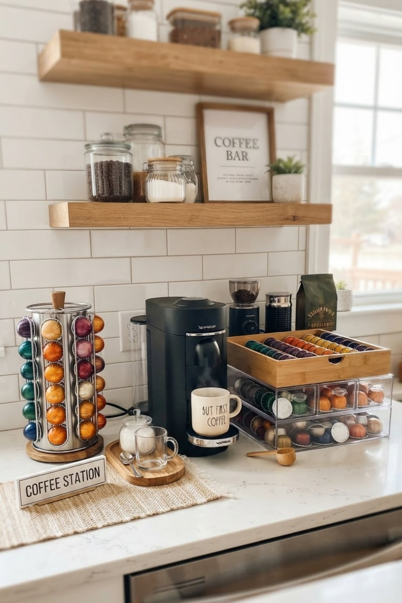
How to Actually Decorate a Coffee Bar
Start with one visual anchor. That could be a beautiful coffee machine, a wooden tray, a piece of artwork, a statement backsplash, open shelving, or even a collection of favorite mugs.
Then build everything else around it. A simple combination of wood, ceramic, glass, and greenery creates warmth almost instantly, without making the whole corner feel overly decorated.
A tray helps more than people expect. It gives your coffee essentials a defined boundary, which keeps mugs, sugar jars, spoons, and coffee containers from slowly taking over the entire countertop. A tiered wooden tray works especially well in a corner, since it stacks mugs, plates, and syrups upward instead of spreading them outward.
For smaller kitchens, leaning on vertical space, floating shelves, carts, and compact cabinets, instead of sacrificing counter space, tends to work out better in the long run.
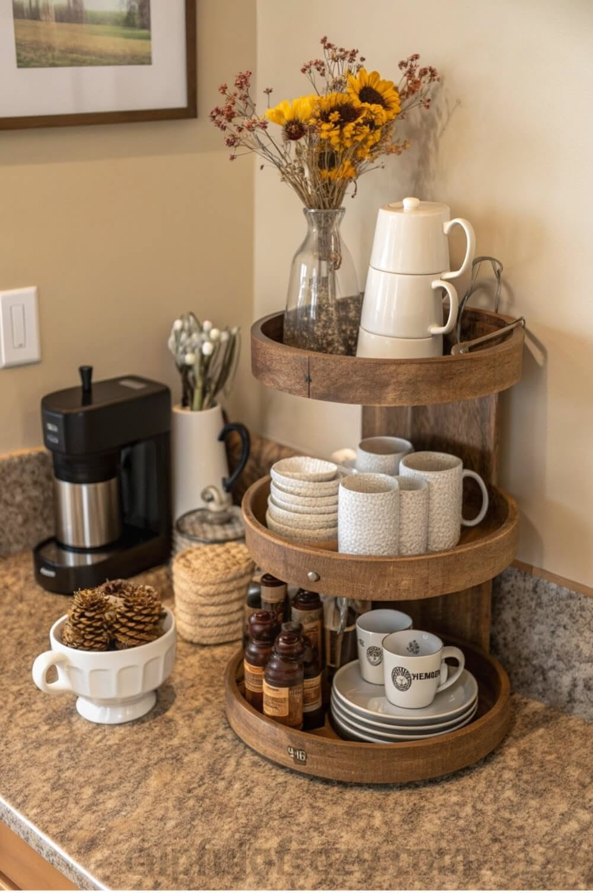
19 Coffee Bar Decor Ideas to Try at Home
1. Build It Around Your Favorite Color
Last but not least, make the coffee bar genuinely yours.
Maybe that's soft pink. Maybe it's sage green, navy, warm beige, terracotta, or classic black and white. Run your favorite shade through the mugs, the artwork, the backsplash, the storage containers, or a few small accessories.
A pink cabinet with colorful mugs on a brass rail and terracotta tile behind the machine feels playful, while a blush arched shelf with white mugs keeps things softer and calmer. You don't need to repaint the whole kitchen. One strong color, repeated across three or four small details, is usually enough to make the whole coffee bar feel designed.
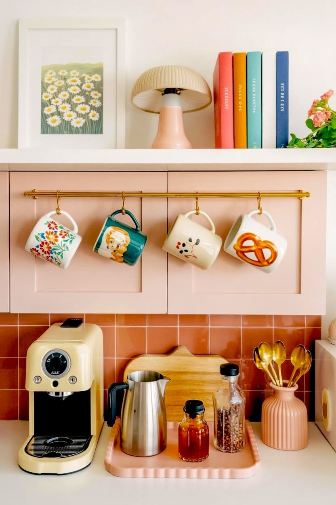
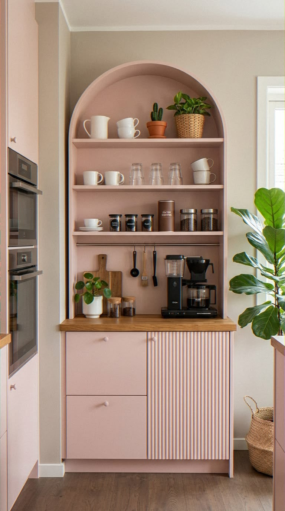
2. Add Under-Cabinet Lighting
Lighting can make a surprisingly big difference to how a coffee bar actually feels.
Installing warm under-cabinet or under-shelf lighting above the station, if your layout allows for it, highlights the backsplash, the machine, the mugs, and whatever else is sitting out, while building a genuinely cozy atmosphere in the morning.
Warm lighting works better here than harsh, cool-white bulbs. Coffee deserves a bit of ambiance, not the interrogation-room treatment.
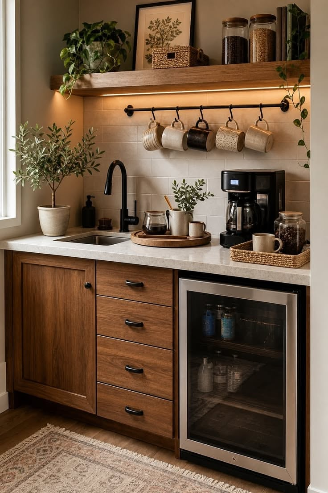

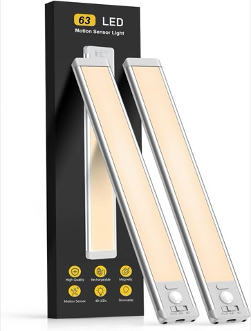
MCGOR Rechargeable Motion Sensor Under Cabinet Lights, 14.7 Inch, 2 Pack
Shop on Amazon3. Make It Work in a Small Apartment
A small kitchen needs smarter planning, not less style.
A narrow shelf, a compact cabinet, floating shelves, or a rolling cart all work well here. Keep only the everyday supplies in the coffee zone itself, a couple of wall shelves for jars, mugs, and a kettle, plus a towel bar for hand towels, is usually all you actually need.
Store bulk coffee, extra mugs, and rarely used equipment somewhere else entirely. Vertical storage makes a real difference in a tight kitchen, since it adds organization without eating into any additional countertop space. The real goal is a useful coffee zone, not just one more thing piled onto the counter.
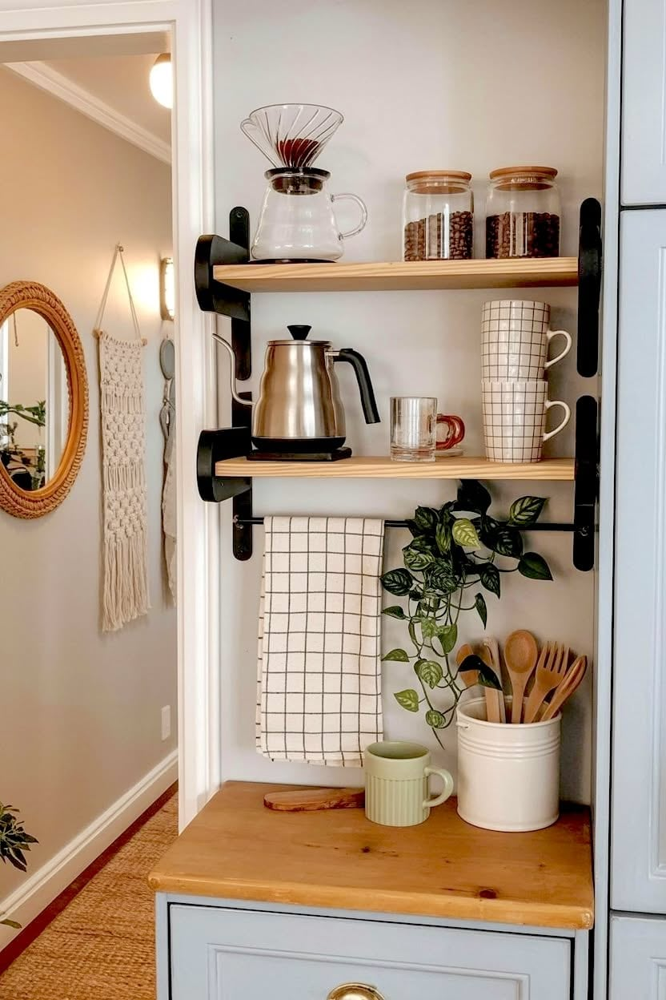
4. Use Wallpaper Behind the Station
Wallpaper can completely change a basic coffee corner.
A deep green botanical print makes a plain white counter feel layered and traditional. A lighter floral leans more cottage, and geometric patterns suit a modern space better.
You don't need to wallpaper an entire room for this to work. A small coffee nook is the perfect low-stakes place to experiment, since it gives a coffee station noticeably more visual personality without committing to anything bigger.
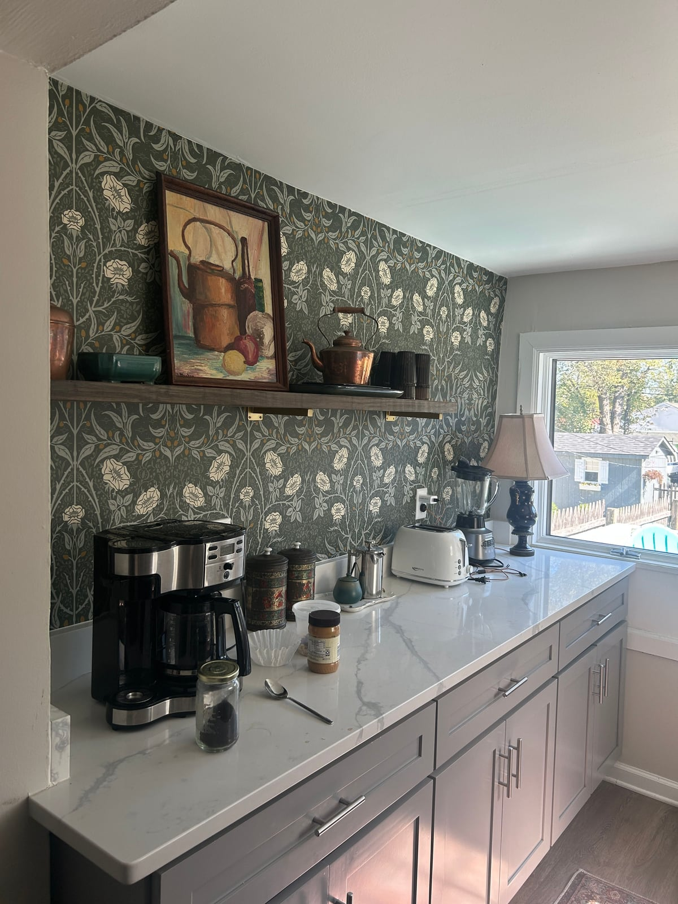
5. Make It Feel Like a Café
Want the home coffee bar to feel a little more special?
Think like a café. Pair a rich wood cabinet with a marble top, a framed café-style painting, warm wall sconces, and a tiny bistro table with a chair. Display your favorite cups, keep coffee beans in attractive containers, and tuck in a small pastry jar.
A tiny drink menu for guests is a fun extra touch if you want to go further. This approach works especially well when the coffee station sits near a dining area, since it turns an ordinary morning routine into a small daily ritual.
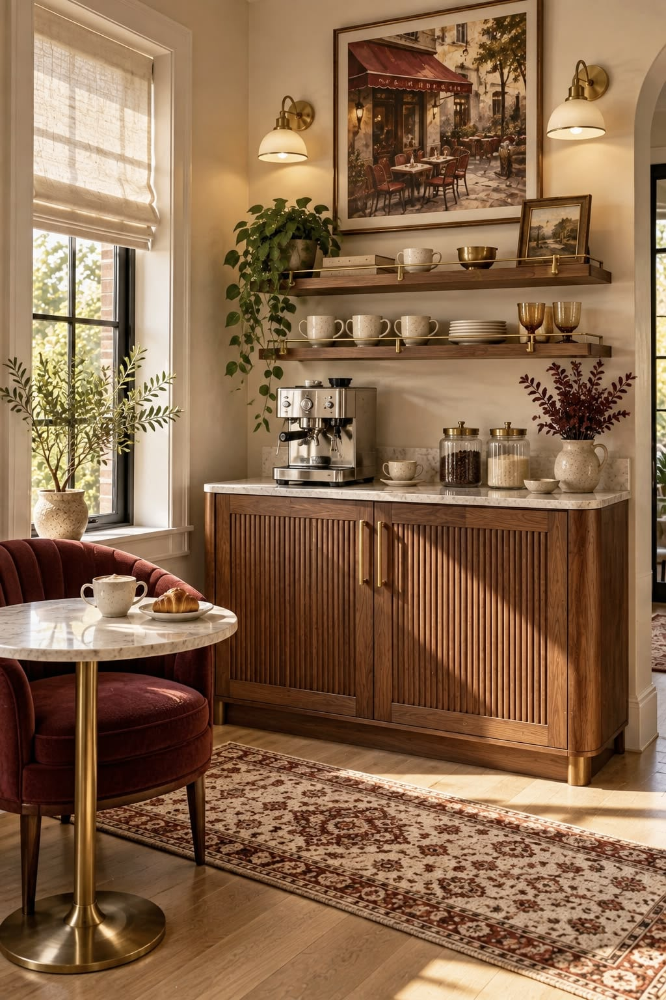
6. Add a Bit of Greenery
Coffee and plants make a surprisingly good combination.
A small pothos, a trailing plant, or a herb pot beside the coffee maker goes a long way. A long vine draped down a set of floating shelves does a lot of visual work for very little actual effort.
The greenery breaks up all the hard surfaces created by appliances, cabinets, mugs, and containers. If the coffee station doesn't get much natural light, a low-light plant, or a realistic faux one, works just as well. There's no shame in a faux plant here.
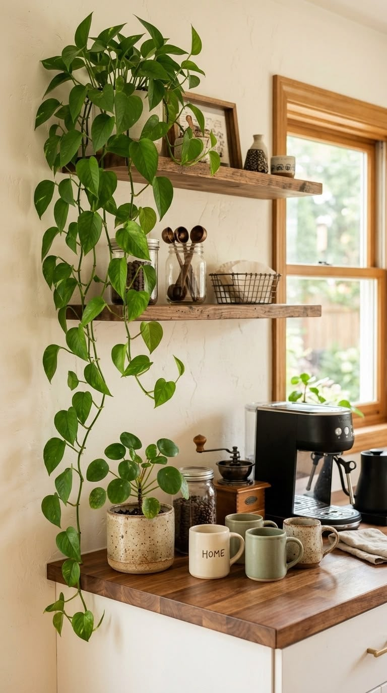
7. Add Glass Canisters
Glass canisters are one of the easiest ways to make a coffee station look organized.
They work well for coffee beans, ground coffee, sugar, tea bags, marshmallows, chocolate, and biscotti, basically anything you'd otherwise be hunting for in a bag at the back of a cabinet.
Clear containers also make it easy to see at a glance when something needs restocking. For a warmer look, glass jars with wooden or bamboo lids combine that same organization with a bit more visual appeal than plain glass alone.
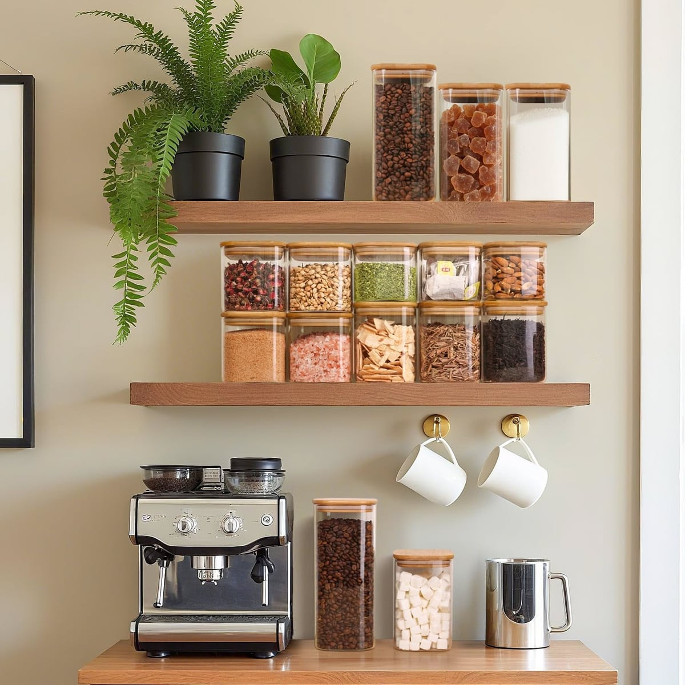
8. Use a Piece of Vintage Furniture
This is one of the more rewarding ideas on this list.
An old console table, sideboard, buffet, or hutch can turn into a genuinely great coffee station. The furniture itself brings far more personality than a standard kitchen cabinet ever could. A hutch with glass-front cabinets is especially nice, since it lets you show off jars and dishes up top while the cabinets below hide everything else.
Add a modern coffee machine or kettle to the counter, then balance it out with dried flowers, a framed piece of artwork, and a leafy plant nearby. The contrast between old and new makes the whole space feel collected over time, rather than purchased all in one trip.
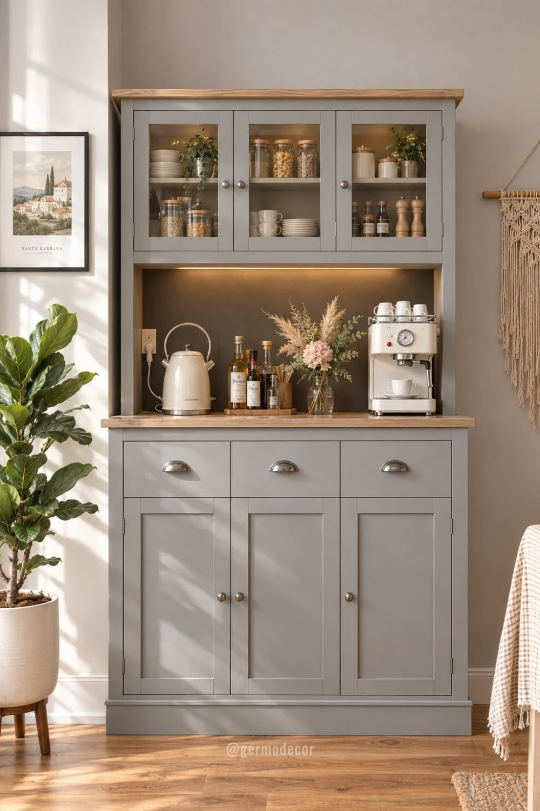
9. Use a Rolling Coffee Cart
A coffee cart gives you real flexibility.
It can move around the kitchen, into the dining room, or over to an entertaining area whenever you actually need it there. Choose a cart with at least two levels: the coffee machine, a tray, and your daily supplies up top, with glasses, syrups, and extras on the lower shelf.
A wood-and-brass cart adds a bit of extra warmth to the whole setup. This option also works especially well for renters, or for anyone who likes rearranging their space fairly often.
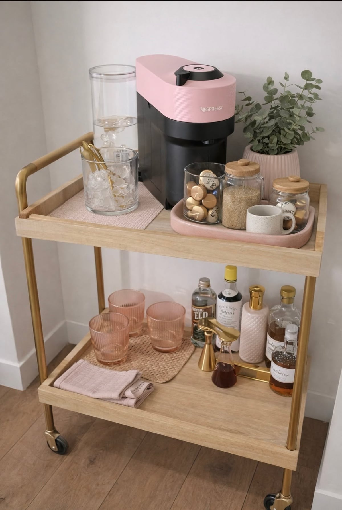
10. Tuck It Inside a Cabinet
This idea works brilliantly if countertop clutter genuinely bothers you.
A dedicated coffee nook, built with cabinetry around it, can store the machine, mugs, coffee, filters, and accessories all in one spot. A small sink or water source nearby, if your layout allows it, keeps the whole morning routine contained to one place.
When you're done making coffee, close the doors, and it disappears entirely. Pull-out cabinet solutions in particular let you use the machine comfortably and then hide it away the moment you're finished, just make sure there's enough ventilation and clearance for whatever appliance you're working with.
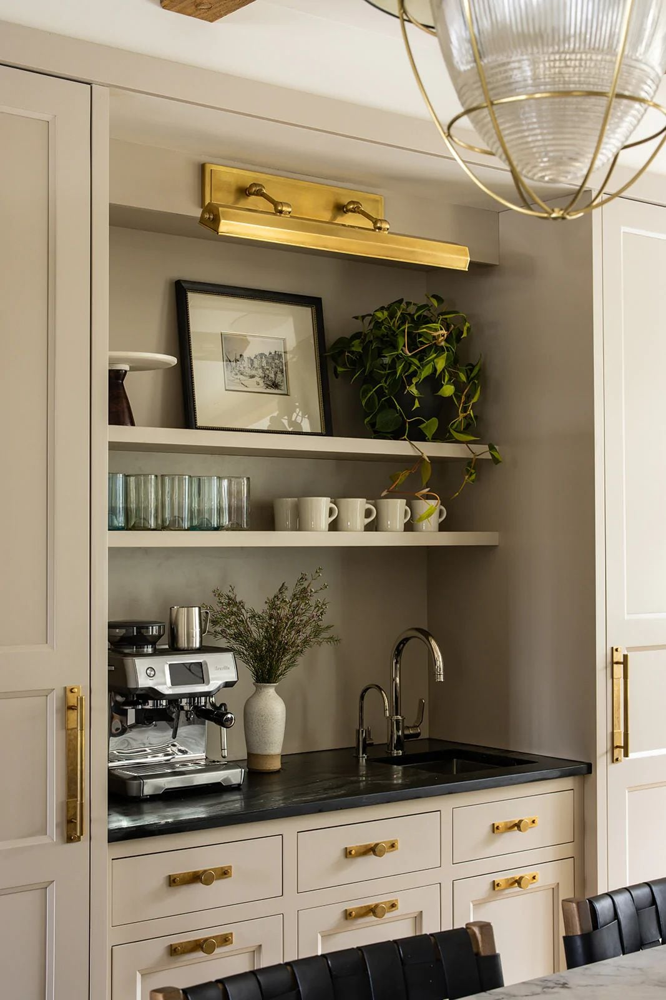

11. Add a Backsplash
Want the coffee station to feel more permanent?
Add a backsplash. Subway tile, zellige tile, soft beige tile, marble, stone, beadboard, wallpaper, or even a painted accent wall all work well behind a coffee setup.
A backsplash is also a great chance to bring in color or texture. A warm neutral tile with brass-railed shelves in front of it feels polished without overwhelming the rest of the kitchen, and a soft sage green can transform an otherwise neutral coffee bar just as easily.
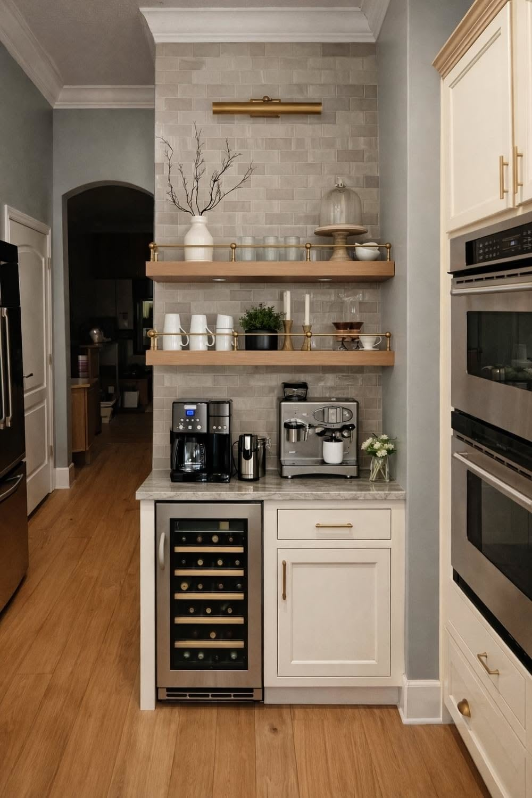
12. Go Modern and Minimal
For a modern coffee station, simplify everything.
Clean cabinetry, minimal accessories, streamlined storage, and a restrained color palette do most of the work. Dark cabinetry, a white counter, light wood shelves, and a touch of brass work particularly well together.
Hide whatever appliances you don't need daily and keep just one beautiful machine out on the counter. The end result should feel clean, not sterile.
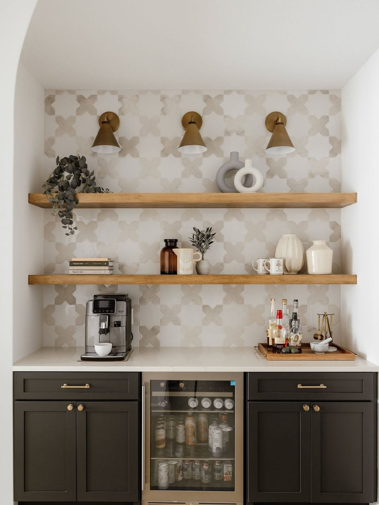

13. Try a Farmhouse Coffee Bar
Farmhouse coffee bars still work beautifully, mostly because the style naturally suits coffee accessories.
White cabinetry, black metal hardware and shelving, wood brackets with warm wood accents, ceramic mugs, woven baskets, and one or two simple signs all combine easily into this look.
A small framed sign or a painted monogram letter adds personality without taking over the space. Just keep the signs under control. Nobody needs twelve of them all announcing that coffee happens here.
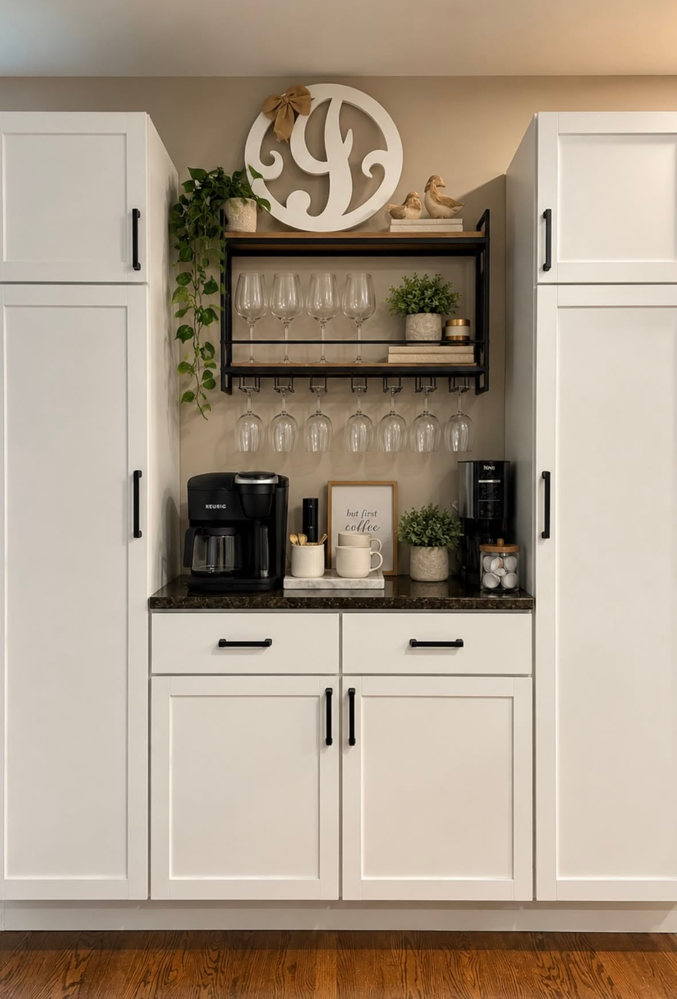
Live Pothos Plants, 4 Pack
Shop on AmazonArtificial Pothos Plant with Pulp Pot
Shop on Amazon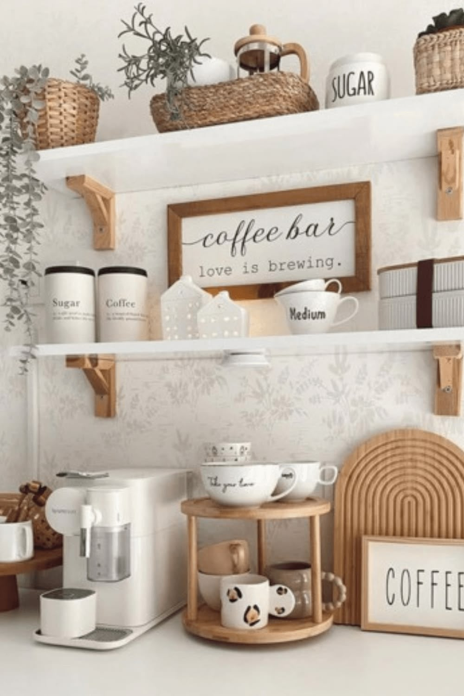
14. Keep It Neutral
If calm interiors are more your thing, try a fully neutral coffee station.
Shades of cream, beige, taupe, warm white, and soft brown form the base. Natural wood, dried flowers, and a woven basket keep the space from looking flat.
This style suits farmhouse, Scandinavian, modern organic, and transitional interiors equally well. Just be careful not to lean on too many shades of white at once. Without enough texture, an all-white coffee station can start looking more like an appliance showroom than a cozy little corner.
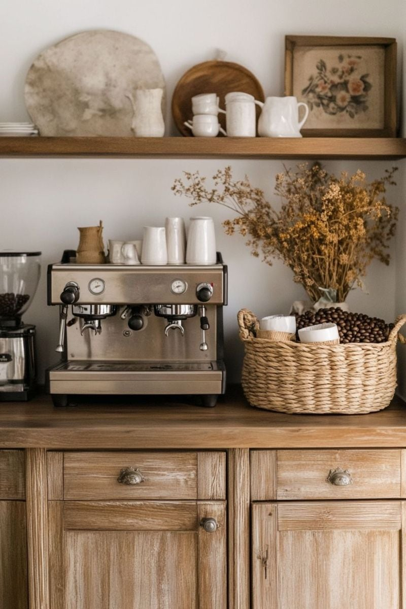
Small Seagrass Storage Baskets, Natural Woven, Set of 3
Shop on Amazon15. Display Your Favorite Mugs
Why hide beautiful mugs inside a cabinet at all?
Use them as decoration instead. Install hooks beneath a shelf, or add a wooden mug tree beside the coffee machine. Mixing shapes and textures works fine, as long as the colors stay within the same general palette, cream ceramic, speckled stoneware, natural wood accents, small glass jars, and one or two darker mugs for contrast all read as cohesive together.
The mugs don't need to match each other at all. A consistent color palette is what actually creates that sense of cohesion.
Bamboo Mug Holder Tree with 8 Hooks
Shop on AmazonMyLifeUNIT Mug Holder Tree with 6 Hooks, Reddish Brown
Shop on Amazon16. Just Add a Tray
Sometimes you don't need any furniture at all.
A wooden tray can instantly organize a countertop coffee station. Put the coffee maker, canisters, and your favorite mugs on one or two trays, and the whole setup suddenly feels intentional.
A tiered stand lets any extra mugs stack upward instead of spreading across the counter, and a small chalkboard sign adds a little personality on top. This option is especially good for renters, since you can completely change the look without drilling a single hole or modifying a cabinet.
Amazon Basics Acacia Wood Serving Tray, 17 x 12 Inch
Shop on AmazonSolidith Acacia Wooden Serving Tray with Handles
Shop on Amazon17. Turn a Dead Corner Into a Coffee Bar
Got an awkward kitchen corner that currently does absolutely nothing?
That's exactly the spot. A compact cabinet with a pair of floating shelves above it turns that forgotten space into a real coffee station. Closed cabinet doors give you somewhere to hide the extras, while the top holds the machine, the kettle, and the grinder.
This approach works especially well in apartments, since it creates a dedicated zone without needing any kind of major renovation. Keep the footprint small and the storage vertical, and the corner stops being wasted space.
Smuxee Walnut Sideboard Cabinet with Line Groove Design
Shop on AmazonCosori Gooseneck Electric Kettle with Temperature Control, 0.8L, Black
Shop on Amazon18. Style It With Open Shelves
Open shelves give you storage while turning your coffee supplies into part of the actual decor.
Everyday mugs go on the lower shelf, and the upper shelf can hold a framed print, a couple of canisters, or a basket.
The trick is editing the display rather than filling every inch. A few attractive pieces read as far more intentional than twenty mugs all competing for attention, and a coffee bar doesn't have to stay confined to the kitchen at all. That same idea works just as well tucked into a dining room, a hallway nook, or even a home office.
HLXRAE Sage Green Botanical Wall Art, Wood Framed, 12 x 16
Shop on AmazonLLEEMPI Sage Green Botanical Wall Art, Set of 3, Wood Framed, 12 x 16
Shop on Amazon19. Build It Around Warm Wood
Wood instantly makes a coffee station feel warmer.
A wooden countertop, a pair of floating shelves, or a simple wooden tray under the coffee machine all bring that warmth in. Pair the wood with white or cream mugs, glass jars, and a couple of small plants.
Light oak or walnut against white cabinetry feels relaxed and genuinely timeless. Leaning a wooden cutting board against the wall behind the machine adds one more easy layer of texture, if you want to push it a little further.
White Porcelain Coffee Mugs, Set of 6, 13 oz
Shop on Amazonvancasso Porcelain Coffee Mugs Set, 16 oz
Shop on AmazonHow to Keep a Coffee Bar From Looking Cluttered
Here's the part people tend to overlook.
Decorating a coffee bar doesn't mean displaying every single coffee-related item you own. A simple rule works best: keep the daily essentials visible and hide everything else.
The countertop itself might only need the following, with everything beyond that going into a drawer or cabinet:
- Coffee maker
- One tray
- Two or three mugs
- Coffee container
- Spoon holder
- One decorative item
Keeping frequently used items accessible while moving the unnecessary clutter into storage is really the whole strategy. And if the kitchen already feels crowded, there's no need to force a huge coffee station into it. Even a small eighteen-to-twenty-four-inch section works fine once it's organized properly.
Cordless Touch Table Lamp, Rechargeable, Classic Edition
Shop on Amazon10 Strawberry Street Embossed Ceramic Canister Set of 3, Hampton White
Shop on AmazonWhat Should Actually Go on a Coffee Bar?
Think about your real morning routine rather than copying someone else's setup exactly.
A practical coffee bar usually comes down to a short list:
- Coffee machine: enough space around it for filling, brewing and cleaning
- Mugs: keep your everyday favorites within reach
- Coffee storage: an airtight container for beans or grounds
- Spoons: a small ceramic or metal holder keeps them organized
- Sweeteners: sugar, honey or syrups in attractive containers
- Napkins: a small stack nearby for spills
- Decor: one plant, a piece of artwork, a candle or a decorative object
The goal is a station that looks genuinely good while still supporting the routine you actually have.
LE TAUCI Ceramic Kitchen Utensil Holder for Counter, White
Shop on AmazonLarge Ceramic Spoon Rest for Stove Top
Shop on AmazonFinal Thoughts on Coffee Bar Decor
The best coffee bar ideas don't necessarily need a large kitchen, expensive furniture, or a renovation.
A small tray works. A floating shelf works. A vintage hutch works. Even an unused corner can turn into your favorite little spot in the whole house.
Start with function, then add personality on top of it. Choose a color palette you genuinely love, keep the daily essentials close, lean on vertical storage when space feels tight, and resist the urge to decorate every square inch.
Because in the end, a coffee bar should make you want to stop for a minute. And if a small coffee corner gives you one peaceful moment before the day gets chaotic, that's pretty successful decorating by any measure.